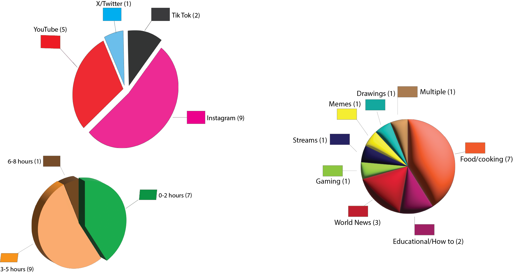

For this assignment, I created a series of questions for my peers to respond to regarding their social media usage. I got 17 responses in total, and the questions asked were the following:
Which social media app do you use the most?
How much time do you spend on social media per day?
What genres do you primarily watch on social media?

HOME